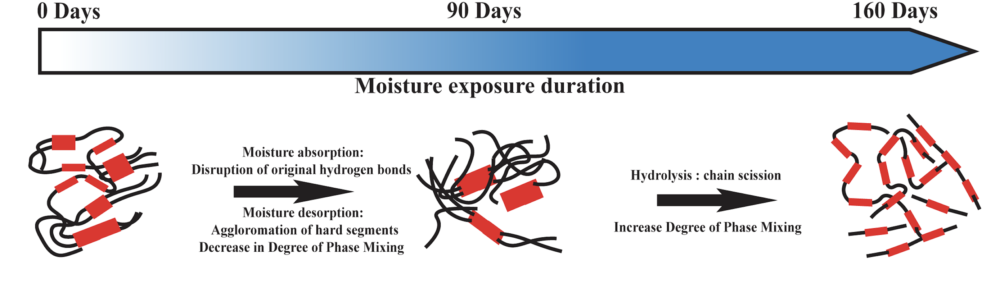

Sabarinathan P Subramaniyan
Researcher | Polymer Composites | AI & Data Science
Summary
Researcher with 7+ years of interdisciplinary experience in polymer composites, material characterization, and finite element modeling. Expert in integrating experimental methods with computational tools and AI to accelerate materials research and predictive modeling. Proven track record in publications, technical leadership, and collaborative innovation. Passionate about applying data science to enhance material performance and solve complex engineering challenges.
Education
PhD in Mechanical Engineering
University of Wisconsin Madison, Wisconsin, USA
August, 2023
MS in Mechanical Engineering
University of Texas at Arlington, Texas, USA
August, 2019
Bachelors in Mechanical Engineering
Anna University, Tamil Nadu, India
May, 2015
Experience
Senior Research Engineer, 3M - Advanced Materials and Transportation Product Platform
Saint Paul - MN, USA | August 2023 - Present
- Assessed long-term reliability of battery cushioning foams via stress relaxation testing under thermal expansion-induced stress, supporting material selection and durability prediction.
- Developed advanced material models including finite strain viscoelasticity and cohesive zone models for pressure-sensitive, structural, and other 3M adhesives, leveraging experimental data to accurately simulate mechanical behavior and predict failure under complex loading conditions.
- Modeling the durability of paint protection polymer films subjected to UV, thermal, and moisture aging by applying data-driven approaches to accelerated weathering data, enabling accurate prediction of degradation trends and enhancing material reliability.
- Engineered advanced characterization techniques and finite element simulations to evaluate the thermal and mechanical response of polymers and composites, supporting design optimization and enhancing material reliability.
- Collaborated with cross-functional teams and product developers to create resilient materials and novel characterization methods, filing invention disclosures for both.
- Coordinated with lab technicians to delegate high-volume mechanical and thermal testing, providing technical instructions to ensure proper execution and adherence to standard procedures.
- Part of a team creating AI integration strategies for our product platform, leading workshops to upskill co-workers on AI trends and its responsible use for productivity.
- Presented research findings and project results to clients, effectively translating complex technical data into clear, actionable insights to support product development and strategic decision-making.
Research Assistant, UW-Madison, Prabhakar Research Group
Madison WI, USA | September 2019 - August 2023
- Analyzed failure mechanisms in elastomeric composite foams using DMA, focusing on filler effects and filler-matrix bonding from $-40^{\circ}C$ to $120^{\circ}C$.
- Conducted chemical (ATR-FTIR) and thermal (TGA, DSC) analysis of Thermoplastic Polyurethane (TPU) to assess microstructural degradation under moisture and temperature exposure.
- Investigated moisture-induced property changes in glass microballoon-reinforced TPU, correlating uptake with thermal (LFA) and dielectric (BbDS) behavior in collaboration with UT Arlington.
- Performed TGA under varying atmospheres and heating rates; developed kinetic models to predict TPU service life and long-term thermal stability.
- Evaluated seawater-induced degradation in epoxy and Carbon fiber reinforced polymer composites (CFRP) by quantifying nanoscale mechanical property changes using nanoindentation and nano-DMA, identifying mechanical degradation and crack initiation.
- Implemented computational modeling techniques to predict moisture transport and mechanical characteristics of micro/meso-scale composites.
- Conducted in-depth analysis of material behavior under extreme conditions through systematic data collection, identifying performance limitations and failure mechanisms, and disseminated findings through peer-reviewed publications, research reports, and technical presentations.
- Mentored graduate and undergraduate students, fostering their interest and development in composite materials through guidance on research projects and experimental techniques.
- Served as Lab Manager, ensuring adherence to all safety protocols, maintaining accurate chemical inventories, conducting periodic equipment checks, and providing comprehensive training to lab users.
- Collaborated with professor in proposal writing, contributing to the development of research proposals and securing funding for engineering projects.
Research Assistant, University of Texas at Arlington Research Institute
Fort worth TX, USA | January 2018 - August 2019
- Utilized dielectric spectroscopy to test and characterize glass fiber reinforced epoxy composites, enabling accurate predictions of material end-of-life and improving reliability in applications.
- Developed and validated continuum and pore-scale models of lithium-sulfur batteries, integrating electrochemical and precipitation effects to optimize cathode design through parametric studies on surface area and porosity.
- Utilized finite element analysis (FEA) to assess the impact of nuclear waste radiation on cesium-reinforced hollandite matrix, identifying strategies to enhance material resistance and ensure safety.
- Mentored undergraduate students in Multiphysics modeling of composite materials, fostering their technical growth and contributing to successful research outcomes.
Engineer Trainee, Aamstech solutions Aluminum die casting industry
Coimbatore TN, India | January 2016 - March 2017
- Assisted in failure analysis of aluminum die-cast locomotive engine cases by identifying root causes and supporting recommendations to improve component reliability and performance.
- Performed and ensured critical pre-casting procedures such as degassing and die preheating to minimize porosity and enhance molten aluminum flowability, contributing to improved casting quality and process efficiency.
- Supported leak testing of locomotive engine manifolds to ensure integrity and identify potential defects impacting performance.
Technical Skills & Expertise
Mechanical Testing
- Universal Testing Machine Operation & Programming
- Dynamic Mechanical Analysis (DMA)
- Atomic Force Microscopy (AFM)
- Nano-indentation, Fatigue Testing, Creep Testing
Material Characterization
- Fourier Transform Infrared Spectroscopy (FTIR)
- Broadband Dielectric Spectroscopy (BbDS)
- Digital Scanning Calorimetry (DSC)
- Thermogravimetric Analysis (TGA)
- Laser Flash Analysis (LFA)
- Raman Imaging Microscope, Scanning Electron Microscope (SEM)
Manufacturing
- Compression molding, Vacuum Assisted Resin Transfer molding (VARTM)
- Selective laser Sintering (SLS), Fused Filament Fabrication (FFF)
Environmental Degradation Analysis
- UV, thermal, and chemical aging
- Accelerated weathering tests, natural exposure studies
- Material stabilization, degradation rate modeling
Finite Element Modeling
- COMSOL Multiphysics, ABAQUS (including user-defined subroutines)
- Ansys, SolidWorks Simulation; model development, validation, and post-processing
Data Science
- Python (NumPy, Pandas, Matplotlib, Seaborn, Scikit-learn)
- Statistical modeling, machine learning for material property prediction and degradation analysis
- Data cleaning, and visualization
CAD Tools
- SolidWorks, CATIA V5, PTC Creo, Autodesk Fusion 360 (3D modeling, assembly, and drafting)
Research Highlights
Moisture-Driven Morphology Changes in TPU-Based Syntactic Foams

Illustration of how moisture exposure leads to changes in polymer morphology over time, affecting hydrogen bonds, segment agglomeration, and phase mixing, impacting thermal and dielectric properties.
Multiscale Modeling of Fiber-Reinforced Composites

Depiction of multiscale modeling approaches for composites, showing microscale, mesoscale, and macroscale analyses, including effective diffusivity and tortuosity relationships in fiber-reinforced materials.
Publications & Presentations
Journal Publications
- Subramaniyan, S.P., Das, P.P., Raihan, R. and Prabhakar, P., 2025. Moisture-Driven Morphology Changes in the Thermal and Dielectric Properties of TPU-Based Syntactic Foams. Polymers, 17(5), p.691. IF: 4.7. CiteScore: 8.0
- Feng, H., Subramaniyan, S.P., Tewani, H. and Prabhakar, P., 2024. Physics-Constrained Neural Network for design and feature-based optimization of weave architectures. Composites Part A: Applied Science and Manufacturing, 187, p.108465. IF: 8.1, CiteScore: 15.2
- Subramaniyan, S.P. and Prabhakar, P., 2023. Moisture-driven degradation mechanisms in the viscoelastic properties of TPU-Based syntactic foams. Polymer Degradation and Stability, 218, p.110547. IF: 6.3, CiteScore: 10.1
- Prabhakar, P., Feng, H., Subramaniyan, S.P. and Doddamani, M., 2022. Densification mechanics of polymeric syntactic foams. Composites Part B: Engineering, 232, p.109597. IF: 12.7, CiteScore: 24.4
- Subramaniyan, S.P., Imam, M.A. and Prabhakar, P., 2021. Fiber packing and morphology driven moisture diffusion mechanics in reinforced composites. Composites Part B: Engineering, 226, p.109259. IF: 12.7, CiteScore: 24.4
Conference Proceedings
- Subramaniyan, S.P. and Prabhakar, P. (2022). Moisture Influence on Viscoelastic and Thermal Properties of Additively Manufactured Syntactic Foams. In Proceedings of the American Society for Composites - Thirty-Sixth Technical Conference on Composite Materials.
- Feng, H., Subramaniyan, S.P. and Prabhakar, P. (2022). Deep Learning Framework for Woven Composite Design and Optimization. In Proceedings of the American Society for Composites Thirty-Sixth Technical Conference on Composite Materials.
- Feng, H., Subramaniyan, S.P. and Prabhakar, P. (2021). Deep learning framework for woven composite analysis. In Proceedings of the American Society for Composites Thirty-Sixth Technical Conference on Composite Materials.
- Prabhakar, P., Damodaran, V., and Subramaniyan, S.P. (2021). ONR Review: Architected Composites for Damage Tolerance in Extreme Conditions. In Proceedings of the American Society for Composites Thirty-Sixth Technical Conference on Composite Materials.
- Subramaniyan, S.P., Imam, M. A., and Prabhakar, P. (2020). Effect of Fiber Packing on Moisture Diffusivity and Tortuosity in Fiber Reinforced Composites. In Proceedings of the American Society for Composites Thirty-fifth Technical Conference.
Dissertation & Thesis
- Subramaniyan, S. P. Impact of Architecture on the Durability of Polymer Composite Materials in Hygrothermal Environments. The University of Wisconsin-Madison. Doctoral Dissertation (2023) | Advisor: Prof. Pavana Prabhakar
- Subramaniyan, S. P. Effect of Sulfur-Porous Carbon Cathode Morphology on the Discharge Process in Lithium-Sulfur Battery. The University of Texas at Arlington. Master's thesis (2019) | Advisor: Prof. Kenneth Reifsnider
Talks & Presentations
- "Understanding the Thermal Transport Phenomena in Architected Fiber-Reinforced Composites" at American Society for Composites 38th Technical Conference, Woburn, Massachusetts, 2023.
- "Effect of Moisture Diffusion on Polymer Composite Degradation", at 3M/UW SPE Exchange, 2020.
Certifications
- Professional Certificate in Generative AI for Everyone by IBM
- Models and Platforms for Generative AI
- Introduction to Prompt Engineering
- Introduction to Generative AI
- Impact, Ethics, and Issues with Generative AI
- Elevating Businesses and Careers with Generative AI
- Intro to Digital Manufacturing with Autodesk Fusion 360
- Autodesk Fusion 360 Integrated CAD/CAM/CAE
- Diploma in Product Design and Analysis
- Programming for Everybody (Getting Started with Python)- University of Michigan Ann Arbor
Professional Services
- Category Chair for Design, Analysis and Simulation Track at CAMX 2023 (Composites and Advanced Materials Expo), held in Atlanta Georgia, USA, October 30 - November 2, 2023.
- Category Chair for Advances in Materials Track at CAMX 2025 (Composites and Advanced Materials Expo), will be held in Orlando Florida, USA, September 8-11, 2025.
- Peer Reviewer:
- Composites Part B: Engineering
- Polymers
- International Journal of Fatigue
- Journal of Applied Polymer Science
- Journal of Composite Materials
- Batteries
Awards
- Student Simulation Competition 1st Prize for "Machine learning application to design co-cure processing of energy-efficient honeycomb sandwich composite structures.", at American Society for Composites 36th Technical Conference, College Station, Texas, 2021.
Teaching Experience
ME 331 Computer-Aided-Engineering
Fall 2022 & Spring 2023
Led and instructed two lab sections, guiding 160 students in advanced modeling techniques and numerical simulations. Provided hands-on learning and personalized support to enhance understanding of industry-relevant engineering tools.
Professional Organizations
- American Society of Composites
- Society for the Advancement of Material and Process Engineering
- American Society for Mechanical Engineers
- Society of Plastics Engineers
For a comprehensive overview of my qualifications, you can download my full CV:
Download My CV (PDF)